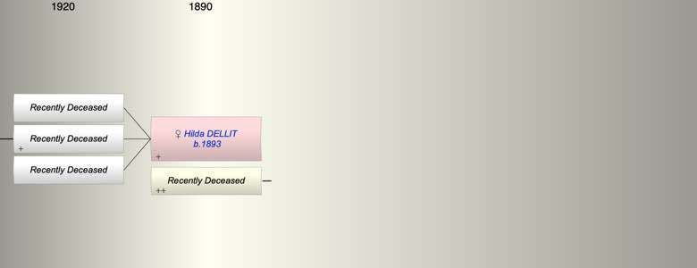

| [Index] |
| Hilda Irene DELLIT (1893 - ) |
|  |
| b. 11 Feb 1893 at Carlton , Victoria, AUstralia |
| m. Late |
| Near Relatives of Hilda Irene DELLIT (1893 - ) | ||||||
| Relationship | Person | Born | Birth Place | Died | Death Place | Age |
| Father in Law | William Henry BREWER | 1857 | Teignmouth | |||
| Mother in Law | Sarah PATON | abt 1858 | ||||
| Self | Hilda Irene DELLIT | 11 Feb 1893 | Carlton , Victoria, AUstralia | |||
| Husband | Living or Recently Deceased | |||||
| Son | Living or Recently Deceased | |||||
| Son | Living or Recently Deceased | |||||
| Son | Living or Recently Deceased | |||||
| Daughter in Law | Living or Recently Deceased | |||||
| Granddaughter | Living or Recently Deceased | |||||
| Granddaughter | Living or Recently Deceased | |||||
| Granddaughter | Living or Recently Deceased | |||||
| Events in Hilda Irene DELLIT (1893 - )'s life | |||||
| Date | Age | Event | Place | Notes | Src |
| 11 Feb 1893 | Hilda Irene DELLIT was born | Carlton , Victoria, AUstralia | |||
| Created on a Mac™ using iFamily for Mac™ on 15 Sep 2023 |